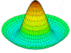
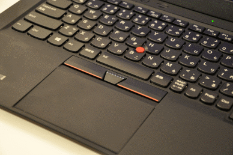

| My Opinions |

Here are some hopefully not controversial opinions of mine. Don't take anything here too
|
|
Alright, here are a few opinions of mine.The USA:It's practically turned into an international circuis. Case closed. Video Games: I'll admit that I used to play a ton of them a long while ago. However, I don't so as much anymore. Video games these days are expensive, bloated cash-grabs designed to siphon as much money from your bank account as they possibly can. The last video game that I bought was a copy of some stupid christian clone of Wolfenstein 3D called "Super 3D Noah's Ark," and that was for $2.50 during the December Steam sale. Everything else was... obtained through other means. The point is, I'm never going to pay for a modern AAA title. Support your indie devs, instead of putting more cash into the pockets of EA and T2. Books: Books are pretty great, and they're definately more educational than banging your head against a keyboard as your webmaster does. However, I still use my Fire HD 8 tablet over reading a book. Although it is from the evil privacy invader known as Amazon, I disabled a bunch of their spyware and almost never have the internet connected. Another thing that makes it great is that I can put as many pirated ebooks that I want into the thing and it will display them with bliss. Also, it only cost me $50 during black Friday. Obsolete Computers: Be nice to old computers, they can actually be worth quite a bit to collectors. Although your 2004 Pentium 4 Dell won't fetch any high bidders, a lot of old IBM, Apple, Commodore, etc. models from the 90s and older are worth something. There's no point in recycling an old machine which you could easily sell to a collector who would appreciate it. Even if you can't sell it, they are pretty fun to fiddle with. Fast Food: Yes, it is bad for you. Yes, it tastes good. If I'm hungry after computer class and don't want to make something, I couldn't care less about what's in the food or where it came from. It's advertised as being fast and cheap, not a gourmet vegan 100% farm-to-table organic meal. It's one thing to eat a McDonalds burger once a week, and it's another to consume huge quantities of the stuff every day for every meal. It's not McDonalds fault if your kids are morbidly obese from cramming down Happy Meals. How about you stop buying them that every single day? Windows 10: It's spyware, but at least I can run all of my Steam games and software. If it weren't for that, I'd still be using Ubuntu. Windows 8: An awful operating system which made everything more difficult. Thankfully nobody uses it anymore... or do they? Windows 7: The second best version of Windows. It was slick, fast, and secure. Not to mention that it came with tons of OEM PCs. It took Vista and made it not suck. Windows Vista: Bloated and slow. The UI is nice but nobody asked for it. Thankfully it morphed into Windows 7. Windows XP: The best version of Windows, by far. Even 16 or so years later, it has aged very well. Epic: "Epic" is not epic. Epic. Reddit: Although there are a ton of really bad subreddits (The_Donald, incels, LSC, etc.),there are also quite a few good ones. I've gotten a few free things from the guys over at r/retrocomputingbattlestations, and have had plenty of great laughs. Reddit is the closest thing to social media that I'll touch. You should get a Reddit account. Long live Reddit. Web Advertisements: I'd be fine with a little bit of web advertising if the advertisers didn't track you or take your data, and if they weren't so obnoxious. Having a small 100x250 rectangle on the side of a website is one thing, and a giant autoplaying which takes up the entire viewport and starts blasting audio at 100% is another. I personally use Adblock, and would recommend that everybody starts using it until advertisers clean up their act. Cell Phones: Cell phones used to be a phone in your pocket. Now, their anything but a phone. I bought a cell phone to keep in contact with others, not so I could sip iBeer while sending blurry photos of my face to others and irradiating my brain. Bing: Useless, bloated, and unneccessary. The best browser for installing Opera. Firefox: It's a pretty good browser. I prefer Opera but would still use it over everything else. Google Chrome: It's a shame that Google Chrome turned out the way that it did. The chromium base is so great, yet Google bogged it down with a crap ton of software designed to steal your information and sell it to advertisers. Use Opera. Opera is better. Opera Browser: The best browser in the world, hands down. It's speedy yet light and includes features similar to chrome, minus the datamining YouTube: There are a few channels which I watch regularly. However, most of the content on there seems to involve showing off your money or getting into fake feuds. That, or some 10 year old screaming into a dollar store mic. Also, Google is an evil company. YouTube should have never sold out to them. CDs/DVDs/Blueray: What's the point of paying more for a physical copy of a song or movie which takes up tons of space over purchasing it digitally? Although you keep telling yourself that the disks have resale value, you'll never actually end up selling anything and they'll sit around forever. A hard drive can store tens of thousands of full HD movies in a tiny space. Stop settling for less. Valentines Day: Blatant commercialism. There's nothing romantic about a fake holiday created by companies to sell more chocolate and flowers. Oh wait... that's every holiday. Not one has survived commercialism. Apple: Apple is a terrible company. Their entire business model relies on cheating consumers out of large sums of money for poorly made and inferior products. I can change the RAM on any other laptop, so why can't I do it on a Macbook? Oh wait, you can't even replace the hard drive on their new computers. It seems as if 98% of their development goes into making the device more difficult to get into, and the other 2% goes into making it fail faster. Intelligence: It's difficult to find somebody who isn't "intelligent." Don't believe me? Think of something which you are good at. It doesn't matter if it has to do with sports, gaming, socializing, singing, or skateboarding. Everybody is good at something, even if they don't know it. Although traditionally intelligence has been viewed as academic, it can be found in many other places as well. Although somebody such as a professor may be very academically intelligent, most wouldn't likely be able to skateboard or sing or restore a car, even to save their own life. Braces: Semi-voluntary mouth torture in the form of overpriced metal glued to your teeth and then bound by wires. As somebody who has them, I feel that braces aren't worth the pain. Just thinking of wires being tightened around and shifting teeth is enough to make any sane person go numb Wireless Internet: Being able to use the internet anywhere without having to use a bulky cable is very good. However, if you use a stationary desktop computer and have a horrible internet connection, then using a wired connection is the better option Coding/Coders [TechMT]: One thing which I see a lot is people who create something on scratch or on code24 and consider themselves an experienced coder. Now, in no way do I consider myself top of the line, but you're reading this website so... we can obviously code at least a little bit. If you go on scratch and make something YOU ARE NOT A CODER, unless of course you are, and are on there for fun, but if you aren't, then actually take the time to lean how to code, it isn't that hard once you get the hang of it, and it's fun! Nerd Culture/Labels: One thing which I still do not understand is the fact that despite being an insult, the "nerd" label has become more desirable as well as trendy in recent years. It almost seems as if "nerd culture" and "pop culture" have intersected, making so-called "nerdy" traits become popular. These days, it's "cool" to like Science Fiction, Computers, and to wear "nerdy" clothing. To be honest, I feel that the need to possess a label is more alarming than the people who beat up nerds fifteen years ago taking on the identity. Your self-worth is determined by the impact which you leave on this world, not by what your peers label you as. If you take away the connotation of said label, all that you get is a meaningless word. In practice, the "coolest" of us are those who help others and who leave the world better than it was beforehand. Laptop Trackpads: Pretty much all of them are a chore to use. The trackpad's always not sensitive enough or too sensitive, and when you glide your fingers over them, it either feels like you're touching a sticky pane of glass or fine-grit sandpaper. To be honest, I greatly prefer IBM's trackpoint. Fore those who don't know, it's the red nub in the middle of all thinkpad keyboards.  Ah... much better!
Social Media: Data-mining and targeted advertisements forced onto your screen thinly disguised as a "trendy" School: Honestly, I really do enjoy going to school. I am interested in the material, and going to school is
|
| - |
| Ivan's World ~ 2018-2019 by Ivan Petrov. |